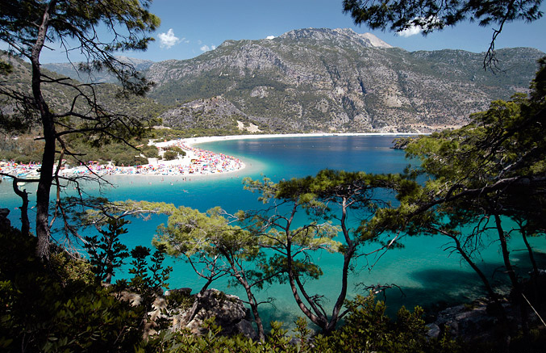

LASY PODZWROTNIKOWE (œródziemnomorskie)Biom ten wystêpuje w strefie œródziemnomorskiej i wiecznie zielona roœlinnoœæ, która go porasta, zwana jest roœlinnoœci¹ œródziemnomorsk¹, maki¹ lub twardolistn¹, ze wzglêdu na jej specyficzne przystosowanie: liœcie s¹ twarde, lœni¹ce i skórzaste, co pozwala im d³u¿ej magazynowaæ wodê. Wystêpuj¹ tu charakterystyczne czerwone gleby, zwane terra rossa. Klimat: gor¹ce i suche lato, ³agodna i wilgotna zima; Roœlinnoœæ: kar³owate dêby, oleandry, mirty, ja³owce, wawrzyny, wrzoœce, pistacje, drzewa cytrusowe, drzewka oliwne, cyprysy; Zwierzêta: daniel, kozica, kozioro¿ec, nietoperz, muflon |
 |